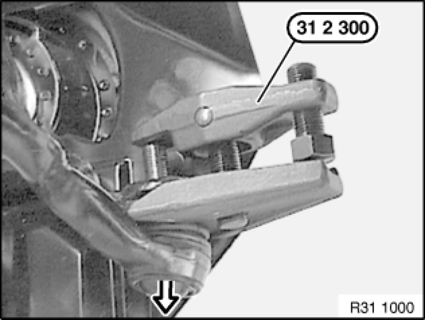
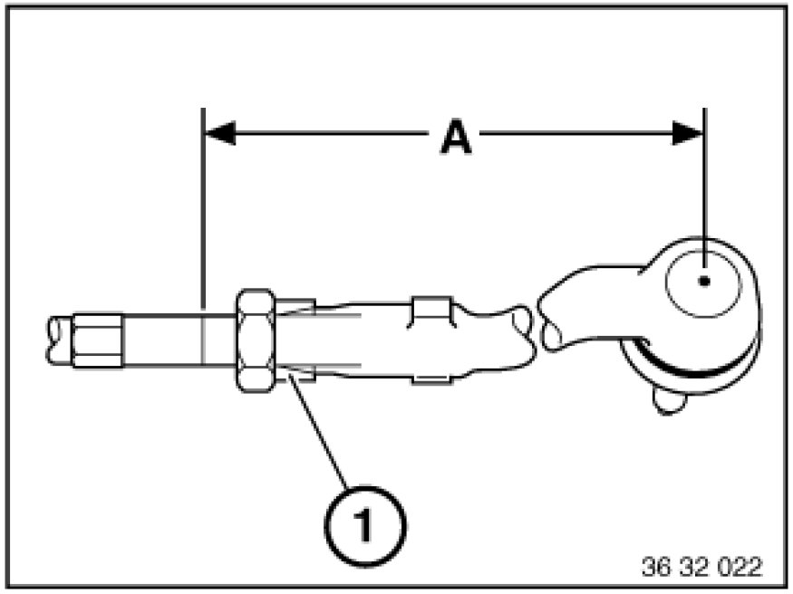

Replacing Left or Right Tie Rod
32 21 151 - Replacing left or right tie rod

Special tools required:
- 31 2 300 31 2 300 Extractor

Note:
If the tie rod end to tie rod screw/bolt connection is released, it is necessary after reinstallation to carry out a wheel/chassis alignment check.

Necessary preliminary tasks:
- Remove front wheel Removing or Installing Front or Rear Wheel

Important!
Do not release tie rod end from swivel bearing with impact tool.
Rubber gaiter of tie rod end must not be damaged!
Do not pull stainless steel ring off journal.

Release nut; if necessary, grip brace at Torx socket.
Force tie rod end off swivel bearing with special tool 31 2 300 31 2 300 Extractor.
Installation:
Keep tie rod end to swivel bearing connection clean and free from oil and grease.
Replace self-locking nut.
Tightening torque 32 21 3AZ [1][2]Specifications.

Determine measurement (A) to simplify following adjustment of front axle.
Release clamping nut.
Screw off tie rod end; if necessary, grip tie rod with open-end wrench.
Installation:
Check gaiter Replacing Gaiter for Steering Gear on Left or Right for damage, replace if necessary.
Mount clamping ring (1).
Screw tie rod end onto tie rod to measurement (A).
Tightening torque 32 21 5AZ [1][2]Specifications.
After installation:
- Perform chassis alignment check
- Carry out steering angle sensor adjustment Adjustments